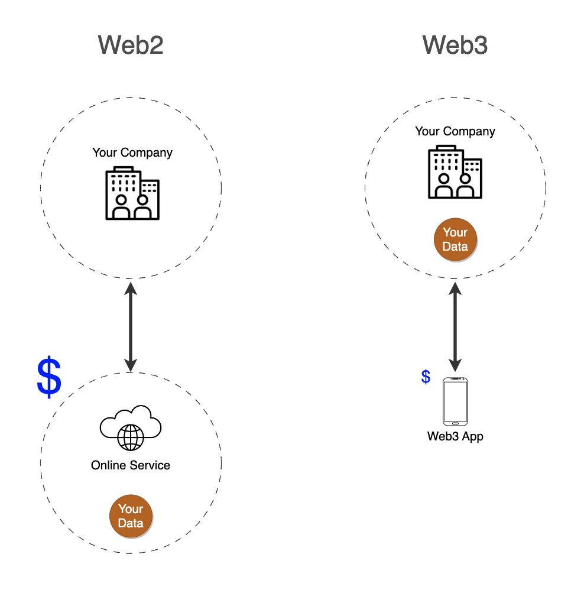
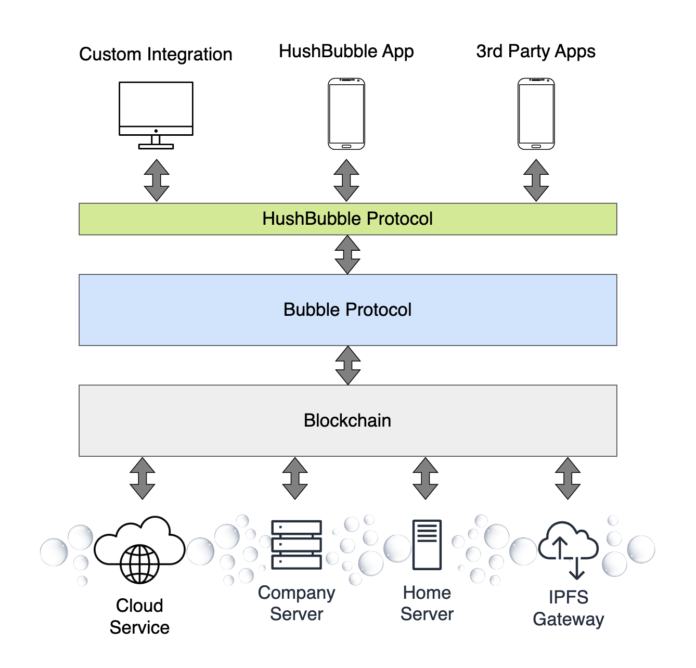

HushBubble
Welcome to HushBubble – the Web3 Decentralised Chat Experience!
What is HushBubble?
HushBubble is the beginnings of a revolutionary messaging app powered by Web3 and the blockchain. Its mission is to be a secure, private, and user-centric chat platform that puts you and your company in control of your data.
As we embark on this innovative venture, we invite you to be an integral part of our development process. Your input, feedback, and ideas will steer the course of HushBubble, shaping it into the ultimate decentralised chat app. Join us in embracing the potential of Web3, where your data is secure, your privacy is paramount, and your voice matters.
Let's co-create the future of messaging together!
Why Web3?
HushBubble empowers you by embracing Web3 principles: putting data ownership back into your hands; giving you the freedom to choose your preferred app; and reducing costs for your business.
Your Data
Your data is no longer stored on centralised servers controlled by corporations; instead, you get to choose where your conversations are hosted and which app to use:
- Use a cloud server, a friend's server or host your own.
- Use your own company infrastructure, databases and servers.
Your App
With HushBubble, you get to choose your preferred app. Provided the app is compatible with the open HushBubble protocol then you can chat with any user on any other app.
- Don't like an app interface? Swap to another or build your own!
- Want to integrate secure chat into your existing application? Go ahead - it's all open source!
Your Business
Since Web3 applications run on open protocols they do not require the complexity of running custom backend servers with their security, maintenance and data protection costs. HushBubble is 'just an app' running on the open Bubble Protocol and the blockchain. This allows it to built and maintained with much lower investment of time and money, cost savings that can be passed on to enterprise customers.
A service like Slack, which costs $15/month per active user, for example, can be replaced with a decentralised application and with data hosted on your own servers, or on a cloud bubble service you trust.
Furthermore, with HushBubble you are not tied in to any company and can contribute to the open protocol at any time.
Privacy and Security Redefined
With HushBubble, your conversations are end-to-end encrypted and stored securely wherever you choose. Only you and the intended recipients have access to your messages – no third-party or centralised authority can ever intrude on your private conversations.
Say goodbye to data breaches, prying eyes, and targeted advertising. Your messages are your own. Your privacy is paramount.
Development Philosophy
HushBubble is developed in the open, using agile techniques to incorporate user feedback and preferences. We believe in the power of community-driven development, and your opinions matter. By participating in our public chat, you can directly influence the app's future features and enhancements.
Your voice shapes the direction we take, making HushBubble the messaging app you truly want.
How to Get Involved
Join the HushBubble Public Chat Channel, give feedback, and bring ideas for features you'd like implemented next. If you are a coder, contribute to the codebase on github and help make this the most innovative chat app in the world!
Thank You
Thank you for being part of HushBubble's community. Together, we'll revolutionise how the world communicates!
Powered by Bubble Protocol
HushBubble leverages Bubble Protocol for its off-chain storage needs. Each chat is stored in a bubble on an off-chain storage service of your choice. Bubbles act as secure data silos, granting fine-grained access controls through on-chain smart contracts. The rules of the bubble - who can access and what they can do - is defined by the smart contract. The difference between a one-to-one chat, group chat or public event chat is down to the smart contract used to construct the bubble. This design enables custom chat rules and allows innovative new chat controls, such as permitting only NFT holders to access a chat.
